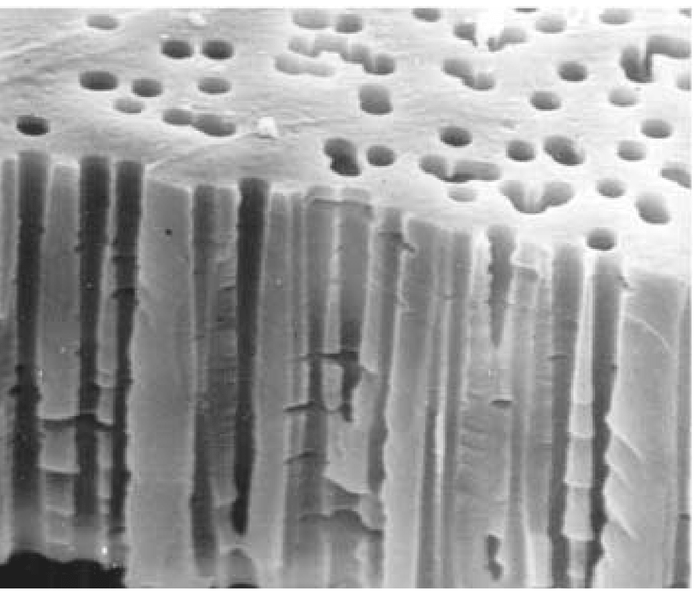
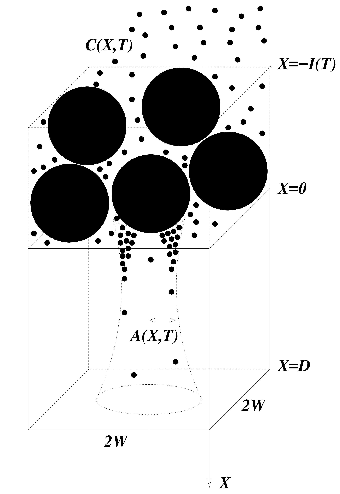
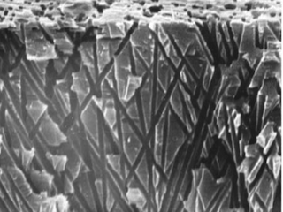
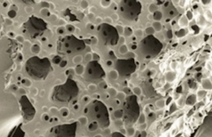
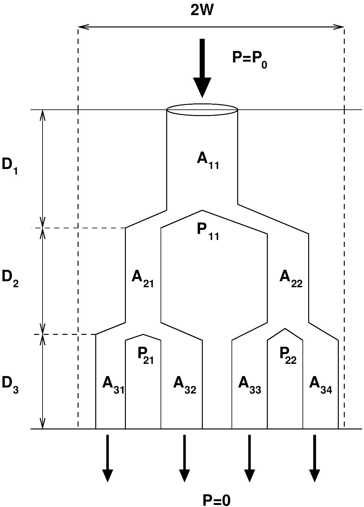
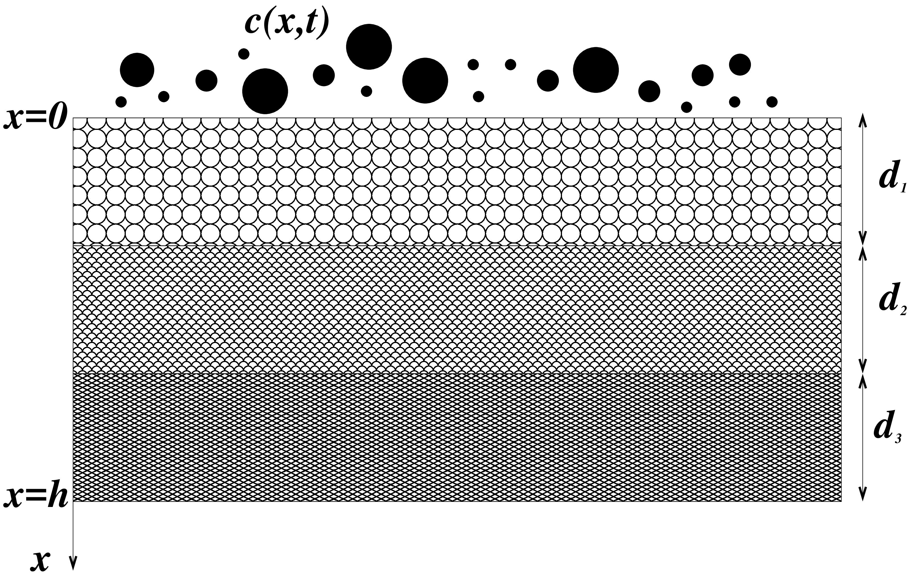
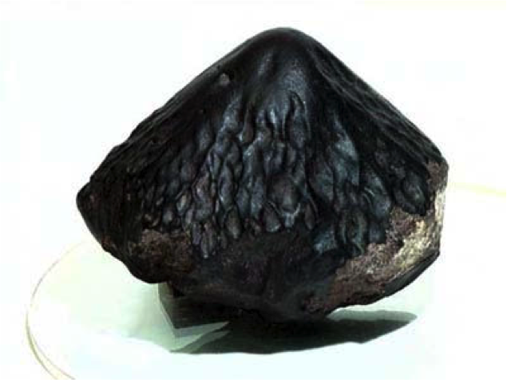
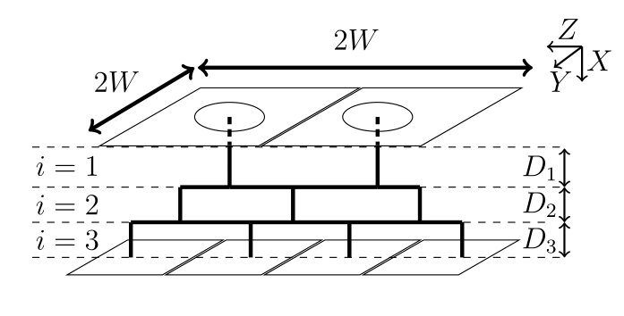

Pleated membrane filters are widely used in many applications, and offer significantly
better surface area to volume ratios than equal-area unpleated membrane filters.
However, their filtration characteristics are markedly inferior to those of equivalent
unpleated membrane filters in dead-end filtration. While several hypotheses have been
advanced for this, one possibility is that the flow field induced by the pleating leads
to spatially non-uniform fouling of the filter, which in turn degrades performance. In
this work we investigate this hypothesis by developing a simplified model for the
flow and fouling within a pleated membrane filter. Our model accounts for the pleated
membrane geometry (which affects the flow), for porous support layers surrounding
the membrane, and for two membrane fouling mechanisms: (i) adsorption of very
small particles within membrane pores; and (ii) blocking of entire pores by large
particles. We use asymptotic techniques based on the small pleat aspect ratio to solve
the model, and we compare solutions to those for the closest-equivalent unpleated
filter.
Flow and Fouling in Membrane Filters: Effects of Membrane Morphology

Membrane filters are used extensively in microfiltration applications. The type of
membrane used can vary widely depending on the particular application, but broadly
speaking the requirements are to achieve fine control of separation, with low power
consumption. The solution to this challenge might seem obvious: select the membrane
with the largest pore size and void fraction consistent with the separation requirements.
However, membrane fouling (an inevitable consequence of successful filtration) is a
complicated process, which depends on many parameters other than membrane-pore
size and void fraction; and which itself greatly affects the filtration process and
membrane functionality. In this work we formulate mathematical models that can
(i) account for the membrane internal morphology (internal structure, pore size
and shape, etc.); (ii) describe fouling of membranes with specific morphology; and
(iii) make some predictions as to what type of membrane morphology might offer
optimum filtration performance.
Membrane Filtration with Multiple Fouling Mechanisms

Manufacturers of membrane filters have an interest in optimizing the internal pore structure of the membrane to achieve the most efficient filtration. As filtration occurs, the membrane becomes fouled by impurities in the feed solution, and any model of filter performance must account for this. In this work, we present a simplified mathematical model, which (i) characterizes membrane internal pore structure via permeability or resistance gradients in the depth of the membrane; (ii) accounts for multiple simultaneous membrane fouling mechanisms (adsorption, blocking and cake formation); (iii) defines a measure of filter performance; and (iv) for given operating conditions, is able to predict the optimum permeability or resistance profile for the chosen performance measure.
Membrane filtration with Complex Branching Pore Morphology

Membrane filters are in widespread industrial use, and mathematical models to predict
their efficacy are potentially very useful, as such models can suggest design modifications
to improve filter performance and lifetime. Many models have been proposed to describe
particle capture by membrane filters and the associated fluid dynamics, but most such
models are based on a very simple structure in which the pores of the membrane are
assumed to be simple circularly cylindrical tubes spanning the depth of the membrane.
Real membranes used in applications usually have much more complex geometry, with
interconnected pores that may branch and bifurcate. Pores are also typically larger on the
upstream side of the membrane than on the downstream side. We present an idealized
mathematical model, in which a membrane consists of a series of bifurcating pores,
which decrease in size as the membrane is traversed. Feed solution is forced through
the membrane by applied pressure and particles are removed from the feed by adsorption
within pores (which shrinks them). Thus, the membrane’s permeability decreases as the
filtration progresses. We discuss how filtration efficiency depends on the characteristics of
the idealized branching structure.
Curvature and Fluid Stress Driven Tissue Growth in a Tissue Engineering Scaffold Pore

Cell proliferation within a fluid-filled porous tissue-engineering scaffold depends on a sensitive choice of pore geometry and flow rates: regions of high curvature encourage cell proliferation, while a critical flow rate is required to promote growth for certain cell types. When the flow rate is too slow the nutrient supply is limited; too fast and cells may be damaged by the high fluid shear stress. As a result, determining appropriate tissue-engineering-construct geometries and operating regimes poses a significant challenge that cannot be addressed by experimentation alone. In this work, we present a mathematical theory for the fluid flow within a pore of a tissue-engineering scaffold, which is coupled to the growth of cells on the pore walls. We exploit the slenderness of a pore that is typical in such a scenario, to derive a reduced model that enables a comprehensive analysis of the system to be performed. We derive analytical solutions in a particular case of a nearly piecewise constant growth law and compare these with numerical solutions of the reduced model. Qualitative comparisons of tissue morphologies predicted by our model, with those observed experimentally, are also made. We demonstrate how the simplified system may be used to make predictions on the design of a tissue-engineering scaffold and the appropriate operating regime that ensures a desired level of tissue growth.
Stochastic Approach to Model Fouling in Membrane Filters with Complex Pore Morphology

Membrane filters have been widely used in industrial applications to remove contaminants and undesired impurities from the solvent. During the filtration process the membrane internal void area becomes fouled with impurities and as a consequence the filter performance deteriorates, which indeed depends on filter internal structure, particles concentration and flow. The complexity of membrane internal morphology and stochasticity of particles flow make the filtration process and fouling mechanisms a mysterious phenomenon and hard to study. Therefore, mathematical modeling can play a key role in investigating filter fouling and discovering efficient filtration process. So far various mathematical models have been proposed to describe the complexity of membrane structure and stochasticity of particles flow individually but very few focus on both together. In this work, we present an idealized mathematical model, in which a membrane consists of a series of bifurcating pores, which decrease in size as the membrane is traversed and particles are removed from the feed by adsorption within pores (which shrinks them) and stochastic sieving (blocking by large particles). We discuss how filtration efficiency depends on the characteristics of the branching structure.
Flow and Fouling in Multi-Layered Membrane Filters

Multi-layer membrane filters, which consist of several thin porous membranes with different properties (such as pore size and void fraction) stacked on top of each other, are widely used in industrial applications to remove contaminants and undesired impurities (particles) from a solvent. It has been experimentally observed that the performance of well-designed multilayer structured membranes are markedly better than those of equivalent homogeneous membranes. Mathematical characterization and modeling of multi-layer membranes can help our understanding of how the properties of each layer affect the performance of the overall membrane stack. In this work, we present a simplified mathematical model to describe how the microscopic properties of a multi-layer membrane affect the overall filter performance.
Meteorites with Stable Descending Orientation

The atmospheric erosion of meteors is a splendid example of the reshaping of a solid object due to its motion through a fluid. Motivated by meteorite samples collected on Earth that suggest fixed orienta- tion during flight–most notably the strikingly conical shape of so-called oriented meteorites–here the hypothesis that such forms result from an aerodynamic stabilization of posture that may be achieved only by specific shapes, is explored. The laboratory scale experiment is conducted for exploring systematic static stability tests on cones of varying apex angles in fast flows, and the resulting map of the orientational equilibria and their stability shows how oriented flight emerges through blue-sky and pitchfork bifurcations. A 2D mathematical model has been developed, and is being compared with the experimental results. Armed with the simplified 2D model of oriented meteorites (with a conical shape), an isosceles triangle is considered in order to calculate its flow wake structure using free streamline theory. Preliminary comparisons with
experiment appear very promising.
Effects of Membrane Morphology on Flow and Fouling: Modeling of Connected Membrane Filters

In this work, we use mathematical modeling to study the influence of a filter membrane’s internal pore structure on its flow properties and adsorptive fouling behavior.
Layered planar membrane structures with intra-layer pore connections are modelled.
Comparisons between non-connected and connected models are presented. Additionally, the influence of spatial, pore-size inhomogeneity on overall performance is modeled
by adding noise perturbation to the pore-size distribution of homogeneous membrane
structures. Membrane performance is gauged via i) the relative comparison of total
throughput and flux evolution during filtration; and ii) control of concentration of
foulants at membrane pore outlets.
Cell Migration in Microfluidic Mazes
Directional decision-making during cell migration is important for regenerative medicine (tissue engineering, wound healing) and developmental biology, since tissue development depends on how the cells distribute themselves within the complex pores of the extra-cellular matrix (ECM). However, current single cell studies are not representative of the scenarios in which multiple cells enter the pores simultaneously and affect each other’s decisions. At the same time,“collective” migration investigations mainly focus on cells that form stable adhesions with other cells during movement (e.g. epithelial cells). Yet, fibroblasts, which are more relevant to synthesizing collagen and ECM, tend to migrate as individual cells when squeezing through the microscopic tissue pores. Previous studies on social interactions in fibroblast migration mainly focused on random migration, while chemotaxis appears to be much less-studied. In order to address the lack of knowledge in this area, a collaboration was initiated with Prof. R. Voronov’s group in Chemical, Biological and Pharmaceutical Engineering department at NJIT, to derive mathematical models to describe their experimental lab work. This experimental lab work is investigating two unexplored aspects of fibroblast migration that are particularly relevant to proliferative environments commonly encountered in regenerative medicine: effects of cell sequence and mitosis on chemotaxis in micro-sized pores.